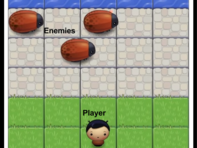
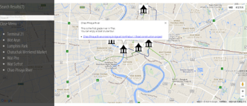
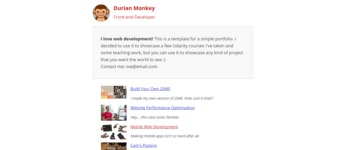

Takahiro Morita
Front-end Ninja
Featured Work

Classic Arcade Game

Neighborhood Map

 My first project in the Udacity Front-End Web Developer nanodegree introduced HTML and CSS.
My first project in the Udacity Front-End Web Developer nanodegree introduced HTML and CSS.
 In this project, I learned how to create responsive web page that work well on any devices- phone, tablet, desktop or anything between.
In this project, I learned how to create responsive web page that work well on any devices- phone, tablet, desktop or anything between.
 My first project in the Udacity Front-End Web Developer nanodegree introduced HTML and CSS. In my second project, Building an Online Resume, I learned XXXXXX...
My first project in the Udacity Front-End Web Developer nanodegree introduced HTML and CSS. In my second project, Building an Online Resume, I learned XXXXXX...
 My first project in the Udacity Front-End Web Developer nanodegree introduced HTML and CSS. In my second project, Building an Online Resume, I learned XXXXXX...
My first project in the Udacity Front-End Web Developer nanodegree introduced HTML and CSS. In my second project, Building an Online Resume, I learned XXXXXX...